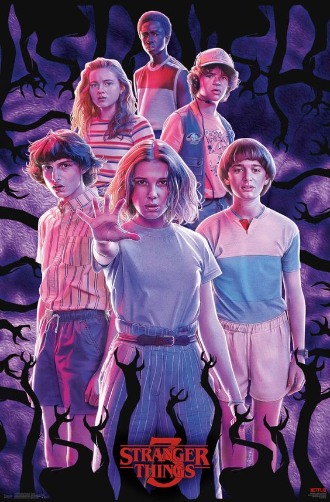
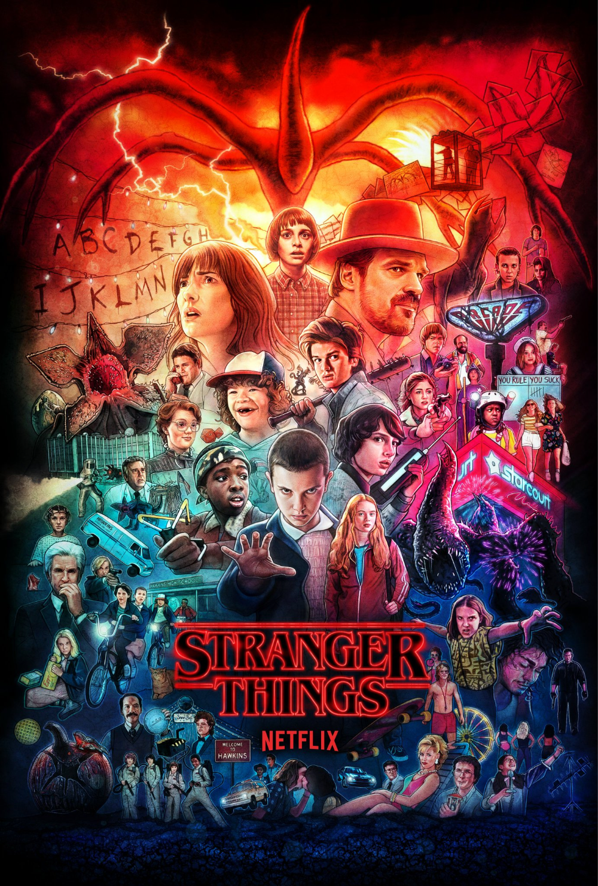

Situada no interior de Indiana, na década de 1980, a história inicia com o desaparecimento de Will, um menino de 12 anos. Enquanto a família e os amigos tentam entender o que aconteceu, o chefe de polícia Hooper inicia uma investigação e se depara com experiências secretas conduzidas pelo governo numa base militar no subúrbio da cidade. Ao mesmo tempo, os amigos de Will - Mike, Dustin e Lucas - tentam localizá-lo por conta própria, mas acabam encontrando Eleven, uma menina misteriosa, com estranhos poderes.
15 de Julho de 2016.
8 episódios.

Um ano após os eventos da primeira temporada, Will retornou ao seu lar e à companhia dos seus amigos mas ainda está conectado ao Mundo Invertido. No entanto, a cidadezinha de Hawkins, Indiana, não está completamente à salvo e não demora muito para que fragmentos do Mundo Invertido façam seu caminho até a superfície.
27 de Outubro de 2017.
9 episódios.
É verão em Hawkins. De férias da escola, Eleven, Mike, Dustin, Lucas , Will e Max aproveitam as novidades do recém inaugurado shopping da cidade, enquanto experienciam situações típicas da adolescência que colocam a prova a amizade do grupo. Mas quando a cidade volta a ser ameaçada por inimigos novos e antigos, eles precisam lembrar que a união é mais forte que o medo.
4 de Julho de 2019.
8 episódios.
Já se passaram seis meses desde a Batalha de Starcourt, que trouxe terror e destruição a Hawkins. Lutando com as consequências, nosso grupo de amigos está separado pela primeira vez – e navegar pelas complexidades do ensino médio não tornou as coisas mais fáceis. Neste momento mais vulnerável, uma nova e horrível ameaça sobrenatural surge, apresentando um mistério horrível que, se resolvido, pode finalmente acabar com os horrores do Mundo Invertido.
27 de Maio de 2022.
9 episódios.
 Trailer Oficial
Trailer Oficial

Prevista para 2024, a 5ª temporada de Stranger Things encerra a série criada pelos irmãos Duffers. Depois de um salto temporal, os personagens queridos retornam a Hawkins para uma última batalha contra as forças sobrenaturais que pairam pela região e os perseguem desde que Will foi parar no mundo invertido. Velhos amigos se encontram e a conexão entre os dois mundos deve ser encerrada de uma vez por todas.